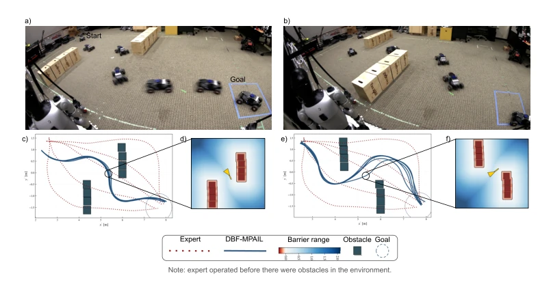
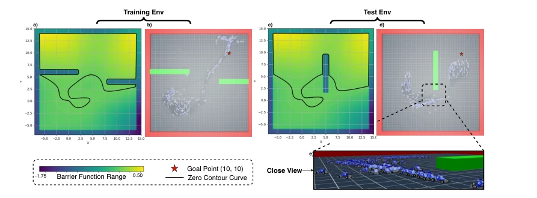
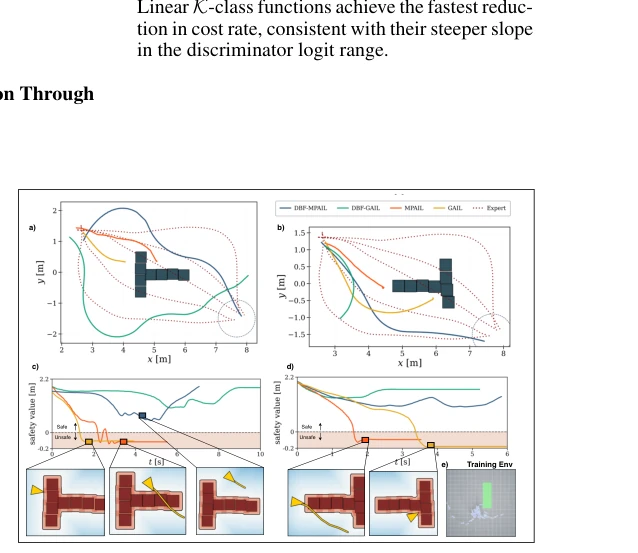
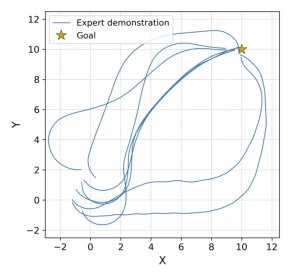
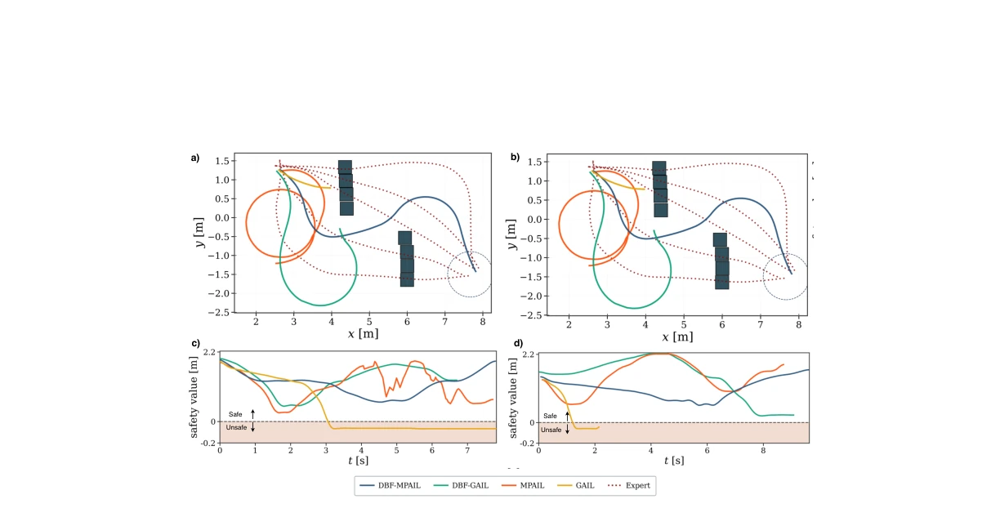
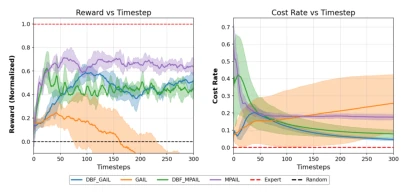

This paper puts the brakes on 'blind imitation' robots with a rather unconventional approach: since expert demonstrations do not teach obstacle avoidance, let the discriminator learn a 'safety barrier' as a side task. DBF forcibly injects Control Barrier Functions (CBF) into the reward search space of Adversarial Imitation Learning (AIL), compelling the robot to learn 'not to run wild'. The highlight is that it indeed avoids collisions in front of unseen obstacles and can even generalize to scenarios completely absent from the training set, which is far superior to baselines that only rote memorize trajectories. However, there are many drawbacks: the planning-based method (MPAIL) is safe, but the deployment success rate in the real world is pitifully low, with only 65% reaching the goal, while the rest either hit walls or spin in place, indicating that the Sim-to-Real pit is still deep; moreover, forcing CBF into the GAN framework makes training stability a headache, as gradient penalty and CBF constraints often conflict. Overall, it is an attempt that is 'safe but perhaps a bit timid', suitable for scenarios with extremely high safety requirements but extremely low fault tolerance.
Inverse Reinforcement Learning (IRL) extracting objective functions from expert demonstrations is the mainstream approach, but existing methods mostly rely on unconstrained exploration, leading to high collision rates during real-world deployment [7]. Especially under the setting of Inverse Reinforcement Learning from Observations (IRLfO), robots can only see state sequences without seeing actions, and lack explicit safety labels, which infinitely amplifies exploration risks during online learning [5, 11]. Although Control Barrier Functions (CBF) can provide theoretical safety guarantees, traditional methods rely on manual design, which is time-consuming and difficult to generalize [12]. Existing data-driven CBF learning methods mostly require action labels or predefined unsafe sets [22, 23, 26], or only work in offline settings and cannot adapt to dynamic environmental changes in online learning. For example, offline methods like Safedice can correct distributions but lack online adaptability [31]. Therefore, there is an urgent need for a mechanism that can automatically recover safety barriers from unlabeled observations and inhibit dangerous behaviors during online exploration, to address the pain point of 'learning fast but dying fast' in IRLfO.

Figure 1: Hardware deployment across two obstacle configurations unseen during training (a,b), demonstrating generalization to unseen unsafe observations. Robots are shown mid-inference nav- igating toward the goal. (c,e) Closed-loop trajectories for DBF based planning method with expert reference (dotted). (d,f) bird’s-eye view map of the robot representing the barrier function range for the map region. See Figure 7 and Table 3 for performance on additional unseen scenarios. Figure 10 shows baseline rollouts in above two scenarios.
方法Method
核心框架是 Discriminative Barrier Functions (DBF)，它将 CBF 的离散形式约束引入到对抗模仿学习（AIL）的判别器训练中。整体流程如下：首先，收集仅包含状态（State-only）的专家轨迹作为安全数据（T_safe），同时利用当前策略生成的轨迹作为不安全数据（T_unsafe）。接着，构建一个联合优化目标：判别器（Discriminator）不仅负责区分专家轨迹和策略轨迹，还必须满足 CBF 的动态约束条件（Equation 2），即保证状态转移的向前不变性。具体实现上，作者将代价函数空间限制为 CBF 类（C_CBF），利用动态约束拉格朗日量 q_h(s, s') 作为判别器的输出，并通过 Wasserstein GAN 的梯度惩罚（Gradient Penalty）来稳定训练。公式 (7) 展示了最终目标，包含对抗损失、梯度惩罚项以及针对安全/不安全状态的 Hinge Loss 约束。这种方法使得判别器直接学习到一个屏障函数 h(s)，该函数在专家状态处为正，在潜在危险状态处为负。最后，学习到的屏障函数被转化为奖励信号，指导策略（Policy）或规划器（Planner，如 MPPI）进行优化，从而在在线学习中实现‘抑制控制’（Inhibitory Control），即在接近未知障碍物时自动降低动作幅度或改变方向。
The core framework is Discriminative Barrier Functions (DBF), which introduces discrete form constraints of CBF into the discriminator training of Adversarial Imitation Learning (AIL). The overall process is as follows: First, collect expert trajectories containing only states (State-only) as safe data (T_safe), while using trajectories generated by the current policy as unsafe data (T_unsafe). Next, construct a joint optimization objective: the Discriminator is not only responsible for distinguishing expert trajectories from policy trajectories but must also satisfy the dynamic constraint conditions of CBF (Equation 2), ensuring forward invariance of state transitions. In specific implementation, the authors restrict the cost function space to the CBF class (C_CBF), use the dynamic constraint Lagrangian q_h(s, s') as the discriminator output, and stabilize training through Wasserstein GAN's Gradient Penalty. Formula (7) shows the final objective, containing adversarial loss, gradient penalty term, and Hinge Loss constraints for safe/unsafe states. This method enables the discriminator to directly learn a barrier function h(s), which is positive at expert states and negative at potential dangerous states. Finally, the learned barrier function is converted into a reward signal to guide the Policy or Planner (e.g., MPPI) for optimization, thereby achieving 'Inhibitory Control' in online learning, i.e., automatically reducing action magnitude or changing direction when approaching unknown obstacles.

Figure 4: Qualitative analysis of barrier function generalization synthesized via DBF-MPAIL. The barrier function learned from unlabeled expert observations generalizes zero-shot (zero colli- sions) to a novel obstacle configuration unseen during training, correctly classifying the new obstacle as unsafe without retraining. (a) Learned continuous barrier function h(s) from expert state-only observations (Figure 8); warm colors indicate safe regions (h(s) > 0), cool colors unsafe regions (h(s) < 0). (b) Top view of the training environment with the marked goal point. (c) The same barrier function adapted to a novel test environment with a previously unseen vertical obstacle — note the unsafe region correctly emerging around the new obstacle. (d) Top view of the test environ- ment showing ag
Experiments were conducted in simulation environments (Isaac Lab) and on real robots (MUSHR). Baselines include standard AIL methods such as GAIL, AIRL, and MPAIL. Evaluation metrics cover collision rate, average environment reward, cost rate (Cost Rate), and minimum obstacle avoidance distance. In simulation maze experiments, the DBF method (especially DBF-MPAIL) achieved zero collisions when facing vertical obstacles unseen during training, while baseline methods (such as GAIL) had a collision rate as high as 20.5%. Online learning curves show that the cost rate of the DBF method decreased significantly with training, proving it can effectively inhibit dangerous exploration. In real-world deployment, DBF-MPAIL successfully avoided obstacles in unseen obstacle configurations, but the success rate (65%) was limited by the Sim-to-Real gap, while DBF-GAIL had no collisions but struggled to reach the goal. Ablation studies show that the linear K-class function performed best in reducing collision rates. Results confirm that DBF can generalize to unseen obstacles, but the robustness of planning-based methods in real scenarios still has room for improvement.

Figure 7: Hardware deployment across additional two obstacle configurations than Figure 1. (a,b) Closed-loop trajectories for all variants with expert reference (dotted). (c,d) Safety value rep- resented by the minimum distance to all obstacles. Insets show robot state at near-collision timesteps. (e) Shows the training en- vironment used to train all the methods.

Figure 8: Expert trajectories col- lected in the maze environment by training PPO with varied wall con- figurations and reward heuristics.

Figure 10: Extension of Figure 7 illustrating baseline trajectories across two hardware scenarios. (a,b) Closed-loop rollouts of all methods in scenarios 1 and 2, respectively. (c,d) Minimum distance to obstacles over time for scenarios 1 and 2, respectively. DBF-MPAIL successfully navigates both scenarios, demonstrating generalization to unseen obstacle configurations. DBF-GAIL avoids col- lisions but fails to reach the goal due to the sim-to-real gap. MPAIL and GAIL fail to imitate the expert trajectory in both scenarios. Note: Expert demonstrations were collected in an obstacle-free environment.
其他图片Other Figures

Figure 5: Normalized reward and cost rate dur- ing online learning, comparing DBF and non- DBF variants across all methods. Shaded regions represent standard deviation across training seeds. DBF-based methods consistently reduce cost rate while maintaining competitive reward.